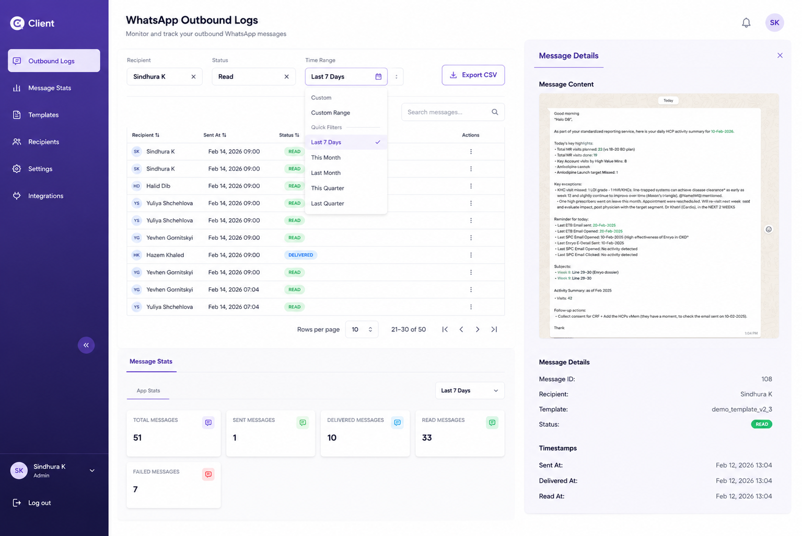

Product preview

Product dashboardMSL Sales
Intelligence App
Databricks → WhatsApp Briefs
Problem. Medical Science Liaisons walk into HCP visits under-prepared.
Solution. Daily intelligence briefs with HCP prep notes, delivered straight to WhatsApp.